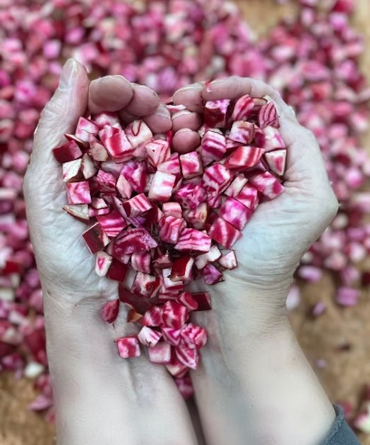

Step 1
Rescuing Surplus Harvest
Partnering with West Michigan growers to capture excess produce, surplus crops, and cosmetically imperfect vegetables that would otherwise be lost.

From field to freight
Step 1
Partnering with West Michigan growers to capture excess produce, surplus crops, and cosmetically imperfect vegetables that would otherwise be lost.

Step 2
Multi-generational volunteers clean, trim, slice, and prepare produce across our Jenison warehouse prep tables.

Step 3
Produce is spread across food-grade mesh trays and dried in commercial dehydrators, maximizing shelf life and nutrient density.

Step 4
Dried vegetables are blended into vitamin-rich soup mixes and vacuum-sealed for long-distance transport.
Step 5
Packaged meals are boxed, palletized, and coordinated for international shipment in Christ's name.
A photo of pallets staged for container transport will go here.
Minimizes logistics costs, making overseas container freight highly efficient.
Locks in up to 95% of vitamins, fiber, and micronutrients.
Requires no refrigeration or specialized climate storage.
Meals are distributed exclusively through trusted, established mission partners, clinics, and relief teams who ensure direct in-hand delivery to hungry communities.
The list of active recipient countries will go here.
Short quotes or field stories, with photos of recipients, will go here.